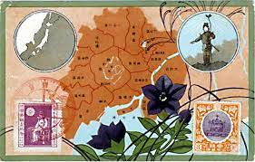

The history of the city of Tokyo stretches back some 400 years. Originally named Edo, the city started to flourish after Tokugawa Ieyasu established the Tokugawa Shogunate here in 1603. As the center of politics and culture in Japan, Edo grew into a huge city with a population of over a million by the mid-eighteenth century. Throughout this time, the Emperor resided in Kyoto, which was the formal capital of the nation. The Edo Period lasted for nearly 260 years until the Meiji Restoration in 1868, when the Tokugawa Shogunate ended and imperial rule was restored. The Emperor moved to Edo, which was renamed Tokyo. Thus, Tokyo became the capital of Japan.

Tokyo was initially a fishing town called Edo. It was first invigorated by the Edo Clan in the twelfth century, and after 200 years, the celebrated Edo Castle was established. In 1509, the city turned into the government's center when Tokugawa Ieyasu became Shogun and prepared it as his hometown. In 2011, a significant earthquake hit Japan, yet little did it harm Tokyo itself while a Tsunami destroyed a northern atomic nuclear plant followed by a nuclear crisis.
In the present day, Tokyo is still in the phase of growing from outside and inside. It was named the third most livable city. The reasons to visit Tokyo are numerous, and from a little fishing town, it has quite possibly the most celebrated and fascinating urban areas with regards to the world.